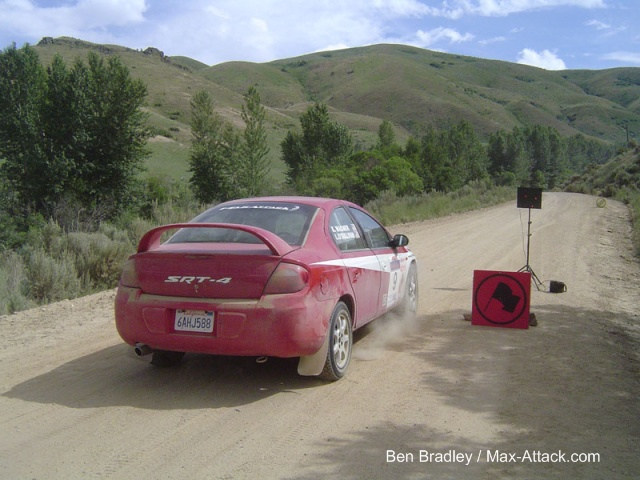

** Amazing drive sees two-wheel-drive Dodge SRT-4 taking First Overall ahead of all of the four-wheel-drive teams
**MaxAttack! draws 22 two-wheel-drive teams to fight for the MaxAttack! cash and points towards the Jake Himes Cup
**Third-year two-wheel-drive series gets underway setting new standard for next-day rally coverage on YouTube
** Wimpey/Wimpey (VW), Bakchis/Bakchis (Mitsubishi), Crane/Darrow (Honda), and Holmes/Gallagher (Ford) round out the top 5 and take home part of
the MaxAttack! purse.

Portland, OR (July 16, 2009) – The first event of the 2009 MaxAttack! Rally Series for two-wheel-drive cars is now history, and for the first time in the series the winning car not only was firsttwo-wheel-drive, but it was the first car overall! Lauchlin O’Sullivan and Karen Wagner, teaming up for the first time, scorched the field at Rally Idaho in a Dodge Neon SRT-4. Despite some mechanical troubles, the team drove fast and clean to collect maximum points and a $1500 check. Josh and Jeremy Wimpey towed out from the east coast and were rewarded with a solid second-place in their VW Golf. The twisty and technical nature of most of the stages was well-suited to the team’s Volkswagen.
The battle for third, fourth and fifth was close to the end. California’s Odi and Amy Bakchis, in their Mitsubishi Eclipse, enjoyed a tight battle all weekend with the diminutive Honda CRX of Cody Crane and Patrick Darrow. Crane drove like a man possessed, and impressed a lot of people with his speed. Were it not for some oil pressure issues after hitting a rock, robbing the Honda engine of it’s VTEC capabilities, the team might have placed considerably higher. In fifth was the big Ford F-150 of Bill Holmes and Sean Gallagher, who wowed the crowds with a spectacular high-speed display at the Cow Creek spectator jump.
Eric Burmeister, board member of the Rallysports Group of America and former MaxAttack! series champion, was enthusiastic about the addition to the series and the quality entry it attracted. “Our first time in Idaho was
spectacular. The air was electric as the best in the west came out to battle in the mountains and on the high desert roads.”
The series now moves to the east coast, for this weekend’s New England Forest Rally. This event, based in Bethel, Maine is the sixth round of the Rally America National Championship and is the second round of the 2009 MaxAttack! series. Like Rally Idaho, there is a formidable line-up of more than twenty two-wheel-drive teams ready to take to the stages in the quest for MaxAttack! money and points. And, like Idaho, the field is not short of star quality.
The favorite has to be local Maine hotshoe Chris Duplessis, teamed with Canadian co-driver Catherine Woods, in a Volkswagen Golf GTi. But the local team is sure to face stiff competition from Andrew Havas and Aaron Crescentini in their more modern turbocharged VW GTi. Havas is one of just two repeat MaxAttack! winners, having won the Oregon Trail rounds in 2007 and 2008 in a borrowed Honda Civic, so he will be fast no matter what he
drives. Another driver to watch is Wyatt Knox, in a Mazdaspeed3. He won both regional rallies at the Susquehannock Trail Rally, albeit in an all-wheel-drive car, but the switch to the Mazda should prove a threatening MaxAttack! combo.
Like at Idaho, there is an impressive list of manufacturers represented in the two-wheel-drive group. There are Volkswagen, Mazda, Ford, Dodge, Saab, Datsun/Nissan, Acura, Mitsubishi and BMW. One group that should be sure to entertain spectators with spectacular rear-wheel-drive sideways action is the vintage contingent, with cars such as the beautiful Mark 2 Ford Escort of Michael Gillespie/Brian Kirby, and the dueling Datsuns, the 280Z of Greg Healey/Brian Johnson and the 510 of Dan Cook/Bill Rhodes.
The MaxAttack! Rally Series, presented by the Rallysports Group of America, consists of three events across the country, and each event will feature a $5,000 prize fund to be distributed among the top two-wheel-drive teams, as well as a season championship. The team that accumulates highest point total from one of the qualifying events and the central shootout will be awarded the prestigious Jake Himes Cup. Rally Idaho and the New England Forest Rally are the two qualifying events, with the final shootout being at Minnesota’s Ojibwe Forest Rally, August 28-29.
For more information about the MaxAttack! Rally Series and the Rallysports Group of America, please visit http://www.max-attack.com.
About Rallysports Group of America
Rallysports Group of America, Inc. (RSGA) was formed as an organization in 2006 to advance the sport of performance stage rally in the United States. By providing education on performance driving, car preparation and safety, and by fostering the growth of meaningful competition, RSGA seeks to provide a sustainable and competitive arena for the advancement of North American performance rally that promotes increased value for rally competitors, organizers, and sponsors alike. For more information, please visit http://www.max-attack.com.